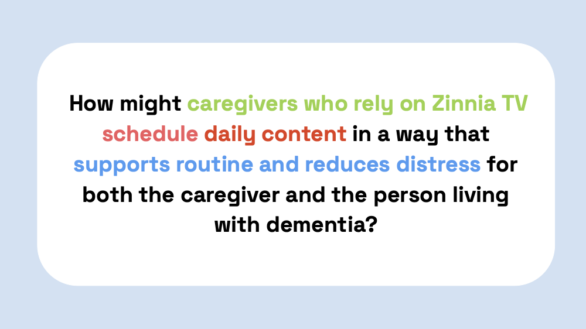
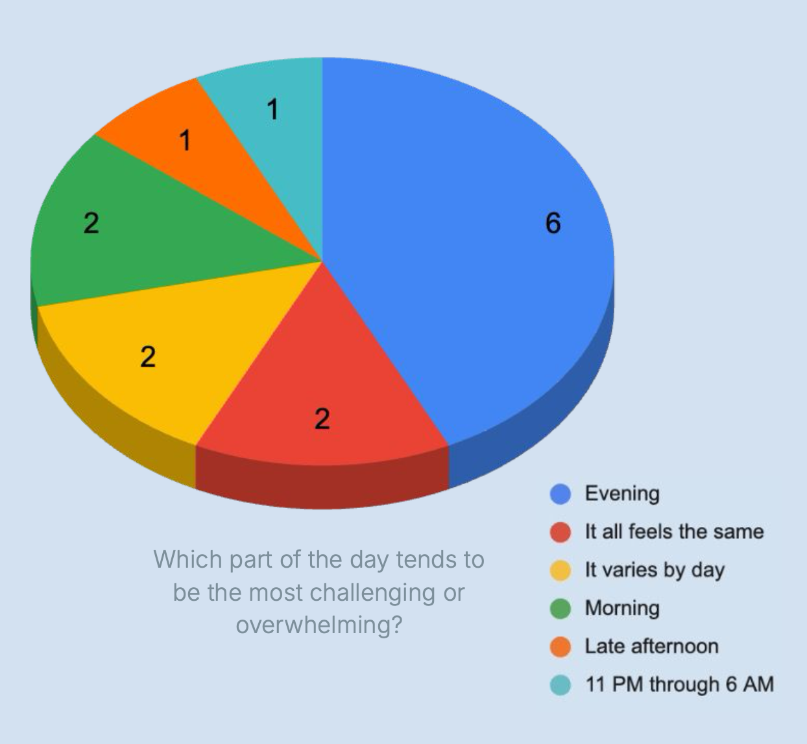
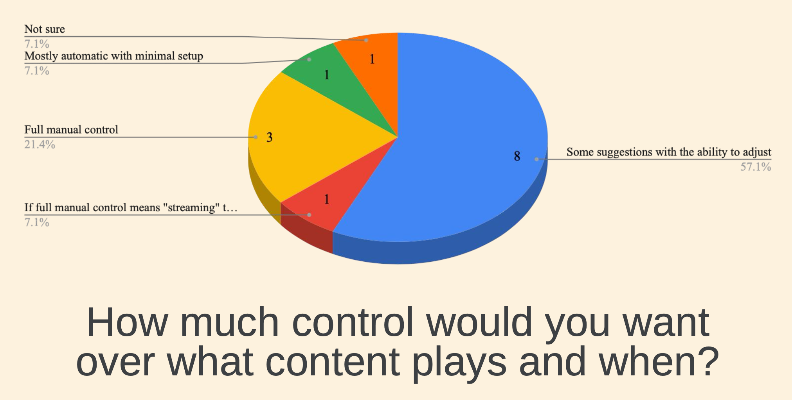
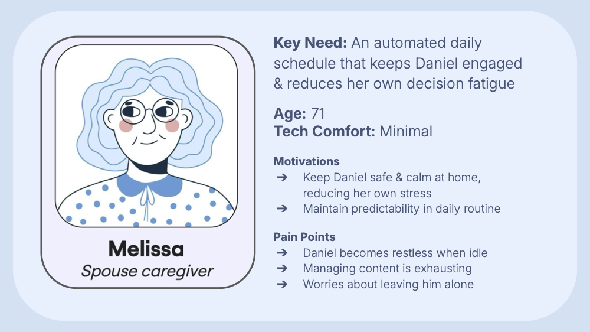
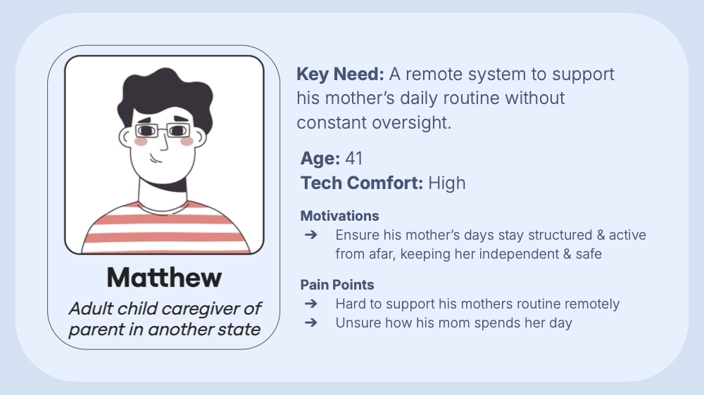
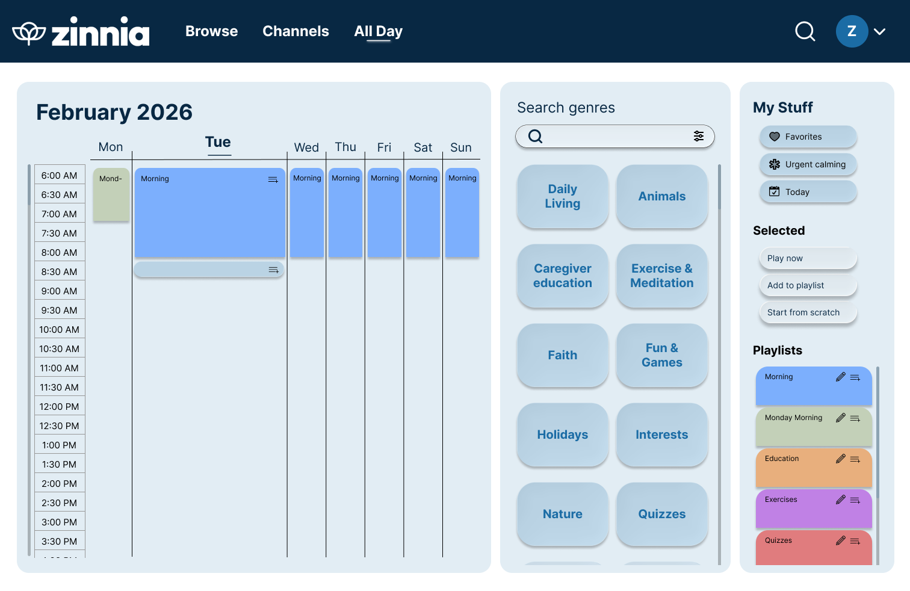

Zinnia All Day
Designing a scheduling experience that helps dementia caregivers build calmer, more structured daily routines with less decision fatigue.


Overview
Zinnia All Day is a capstone project created with Zinnia TV, a platform that offers dementia-friendly video content. Our team explored how scheduling could make that content more useful in everyday care by helping caregivers plan around routines, challenging transition periods, and changing needs throughout the day.
Rather than adding more complexity, we aimed to design a system that feels supportive and low effort. The result was a scheduling concept that lets caregivers organize content by time of day, prepare ahead, and make quick adjustments when routines change.
Context
Caregivers supporting people living with dementia often deal with stress, burnout, and cognitive overload. Routine can make a meaningful difference, but building and maintaining that routine takes time and energy many caregivers do not have.
Zinnia already offers thoughtful, dementia-friendly content. The gap we focused on was not the content itself, but how caregivers could organize, plan, and reuse it in a way that fits their life.
On the current Zinnia platform, caregivers cannot...
- Organize content around time-of-day routines
- Customize schedules to support specific care needs
- Build and schedule custom playlists
A key idea that shaped the project
“The most valuable button is not the play button, it is the pause button. That is the moment to pause and connect over the content being shared on the screen, prompting conversation between the caregiver and the person they support.ˮ — Bill Uniowski, Zinnia Founder
My Role
I serve as a UX Designer & Researcher, with my biggest contributions in research, synthesis, and building the overall UX direction.
- Built the caregiver survey and shaped the research questions
- Synthesized findings into design insights the team could act on
- Created user personas and key interaction decisions
- Helped translate research into wireframes
Team Contribution
As a team, we worked across research, strategy, and prototyping to define the problem space and turn it into a usable concept.
- Conducted survey research, interviews, and literature review
- Defined personas across different caregiving situations
- Validated key concepts with users and sponsor feedback
- Built and refined a Figma prototype for the MVP presentation
Survey Insights
I created the caregiver survey to better understand routines, stressful parts of the day, preferred levels of control, and what kinds of content caregivers actually use.


Key Takeaways from the Survey
- Late-day is hardest: Evenings and transitions were the most overwhelming times for many caregivers.
- Caregivers want guided control: Adjustable suggestions were preferred over full automation or total manual setup.
- Routines are not universal: Caregiving requires structure, but also flexibility and customization.
- Media serves a purpose beyond entertainment: It can calm, distract, spark conversation, and support rest or chores.
Personas
I turned the research into personas to capture distinct caregiving situations and keep the product grounded in real use cases. These specific sponsors were requested by our sponsor: One caregiver of a spouse and one caregiver of a parent in another state.


Design Direction
The design centered on one idea: scheduling should reduce effort, not create another task. We focused on features that match how caregivers already think about the day, while keeping the interaction model simple enough to feel approachable.
1. Structured Daily Scheduling
Organize content into morning, afternoon, and evening routines to support predictability.
2. Pre-Planned Programming
Let caregivers build ahead so they are not constantly deciding what to play in the moment.
3. Connection, Not Just Consumption
The tool should support meaningful interaction around content, not replace human care.
Solution
We designed a drag-and-drop scheduling interface that lets caregivers build routines using curated content, playlists, and reusable content blocks. The goal was to make planning faster while still leaving room for quick changes.

Key Features
- Drag-and-drop scheduling across a weekly timeline
- Content grouped in a way that supports routine-based planning
- Reusable playlists for faster setup
- Simple options to start from scratch, watch now, or add to playlist
Next Steps for Spring Quarter
- Expand current wireframes into a fully usable prototype platform
- Implement back-end for scheduling system
- Test via usability testing and iterate upon feedback